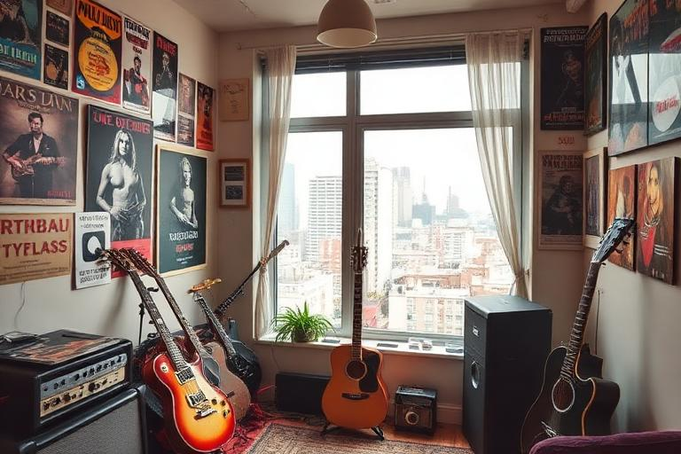

Build a base for the life behind the career
Housing & Property
RockMundo's housing system gives characters a place to live rather than treating accommodation as background flavour. You can use rental housing or own property, and the quality of that housing broadly affects comfort, recovery, wellness and creative life.

In brief
Secure housing that your character can afford before chasing the most prestigious property. Better housing can provide stronger lifestyle support, while lacking accommodation has meaningful disadvantages. Treat rent, purchase costs and other obligations as part of your personal budget alongside travel, education, gear and music activity.
Renting and owning
RockMundo supports both rentals and owned property. These routes solve the same basic problem—giving the character suitable housing—but with different financial implications and potential levels of comfort.
Rental
A practical way to secure accommodation without committing to property ownership.
Owned property
A longer-term asset and lifestyle choice that can provide stronger benefits at higher tiers.
Market
Housing has its own market activity, so availability and market conditions can change rather than remaining a fixed catalogue forever.
No housing
Living without suitable housing can reduce the quality of recovery and creative life instead of being a cost-free default.
What housing broadly affects
Housing quality can support several connected character systems. The implementation includes effects around energy recovery, health regeneration, creativity and comfort, with comfort feeding into wellness. The exact tier values are intentionally not reproduced here because those numbers are balance data and can change.
| Area | How to think about it |
|---|---|
| Energy & recovery | A better home can make normal recovery more effective. |
| Health | Stable accommodation supports the character's physical condition over time. |
| Creativity | Housing can contribute to the environment around creative work such as songwriting. |
| Comfort & wellness | Higher-quality accommodation creates a stronger lifestyle baseline. |
Housing belongs in your budget
The most expensive property is not automatically the right first purchase. Money tied to housing cannot simultaneously pay for lessons, recordings, travel, gear or emergency costs. A character with a glamorous home but no working cash can still struggle to progress.
- Keep enough liquid money for your normal music and travel commitments.
- Compare renting with buying based on the stage of your career rather than status alone.
- Consider recurring obligations before taking on other borrowing or property commitments.
- Use finance history and banking views to understand housing costs as part of total cashflow.
Housing and a music career
Housing matters because wellness and creativity matter elsewhere. A well-rested character is better positioned to handle demanding schedules, and the creative environment can support songwriting. That does not mean buying a luxury home guarantees a great song or perfect gig: housing is one supporting system among many.
- Secure a stable base. Avoid treating no housing as a free optimisation choice.
- Protect cashflow. Make sure accommodation fits the rest of your plan.
- Upgrade when the wider career can support it. Let income and stability justify more expensive housing.
- Use the benefit, not the prestige. Recovery and comfort matter more than simply owning the biggest property.
The housing market
Housing is backed by a market system rather than a completely static shop. That means property can participate in the wider economy and can be updated over time. Use the current housing screen for available properties, rental choices and live prices rather than relying on a wiki price table that would quickly become stale.
What about personal vehicles?
Personal vehicles are a neighbouring character-lifestyle system and are separate from band touring vehicles. A personal vehicle belongs to the character side of the game; vans, buses, trucks and other tour transport belong to band logistics. Do not assume owning one automatically replaces the rules of the other.
What stays hidden?
The Compendium explains the direction of housing benefits but does not publish the exact recovery, health, creativity or comfort values for every housing tier. Those values are balancing inputs, not a permanent player promise.